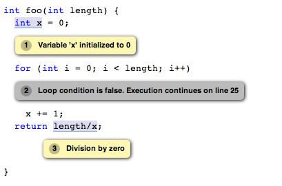

FAQ and How to Deal with Common False Positives
- How do I tell the analyzer that I do not want the bug being reported here since my custom error handler will safely end the execution before the bug is reached?
- The analyzer reports a null dereference, but I know that the pointer is never null. How can I tell the analyzer that a pointer can never be null?
- How do I tell the static analyzer that I don't care about a specific dead store?
- How do I tell the static analyzer that I don't care about a specific unused instance variable in Objective C?
- How do I tell the static analyzer that I don't care about a specific unlocalized string?
- The analyzer assumes that a loop body is never entered. How can I tell it that the loop body will be entered at least once?
- How can I suppress a specific analyzer warning?
- How can I selectively exclude code the analyzer examines?
Q: How do I tell the analyzer that I do not want the bug being reported here since my custom error handler will safely end the execution before the bug is reached?

You can tell the analyzer that this path is unreachable by teaching it about your custom assertion handlers. For example, you can modify the code segment as following.
void customAssert() __attribute__((analyzer_noreturn));
int foo(int *b) {
if (!b)
customAssert();
return *b;
}
Q: The analyzer reports a null dereference, but I know that the pointer is never null. How can I tell the analyzer that a pointer can never be null?
The reason the analyzer often thinks that a pointer can be null is because the preceding code checked compared it against null. So if you are absolutely sure that it cannot be null, remove the preceding check and, preferably, add an assertion as well. For example, in the code segment above, it will be sufficient to remove the if (!b) check.
void usePointer(int *b);
int foo(int *b) {
usePointer(b);
return *b;
}
Q: How do I tell the static analyzer that I don't care about a specific dead store?
When the analyzer sees that a value stored into a variable is never used, it's going to produce a message similar to this one:
Value stored to 'x' is never readYou can use the (void)x; idiom to acknowledge that there is a dead store in your code but you do not want it to be reported in the future.
Q: How do I tell the static analyzer that I don't care about a specific unused instance variable in Objective C?
When the analyzer sees that a value stored into a variable is never used, it is going to produce a message similar to this one:
Instance variable 'commonName' in class 'HappyBird' is never used by the methods in its @implementationYou can add __attribute__((unused)) to the instance variable declaration to suppress the warning.
Q: How do I tell the static analyzer that I don't care about a specific unlocalized string?
When the analyzer sees that an unlocalized string is passed to a method that will present that string to the user, it is going to produce a message similar to this one:
User-facing text should use localized string macroIf your project deliberately uses unlocalized user-facing strings (for example, in a debugging UI that is never shown to users), you can suppress the analyzer warnings (and document your intent) with a function that just returns its input but is annotated to return a localized string:
__attribute__((annotate("returns_localized_nsstring")))
static inline NSString *LocalizationNotNeeded(NSString *s) {
return s;
}
You can then call this function when creating your debugging UI:
[field setStringValue:LocalizationNotNeeded(@"Debug")];Some projects may also find it useful to use NSLocalizedString but add "DNL" or "Do Not Localize" to the string contents as a convention:
UILabel *testLabel = [[UILabel alloc] init]; NSString *s = NSLocalizedString(@"Hello <Do Not Localize>", @"For debug purposes"); [testLabel setText:s];
Q: The analyzer assumes that a loop body is never entered. How can I tell it that the loop body will be entered at least once?
In the contrived example above, the analyzer has detected that the body of the loop is never entered for the case where length <= 0. In this particular example, you may know that the loop will always be entered because the input parameter length will be greater than zero in all calls to this function. You can teach the analyzer facts about your code as well as document it by using assertions. By adding assert(length > 0) in the beginning of the function, you tell the analyzer that your code is never expecting a zero or a negative value, so it won't need to test the correctness of those paths.
int foo(int length) {
int x = 0;
assert(length > 0);
for (int i = 0; i < length; i++)
x += 1;
return length/x;
}
Q: How can I suppress a specific analyzer warning?
There is currently no solid mechanism for suppressing an analyzer warning, although this is currently being investigated. When you encounter an analyzer bug/false positive, check if it's one of the issues discussed above or if the analyzer annotations can resolve the issue. Second, please report it to help us improve user experience. As the last resort, consider using __clang_analyzer__ macro described below.
Q: How can I selectively exclude code the analyzer examines?
When the static analyzer is using clang to parse source files, it implicitly defines the preprocessor macro __clang_analyzer__. One can use this macro to selectively exclude code the analyzer examines. Here is an example:
#ifndef __clang_analyzer__ // Code not to be analyzed #endifThis usage is discouraged because it makes the code dead to the analyzer from now on. Instead, we prefer that users file bugs against the analyzer when it flags false positives.